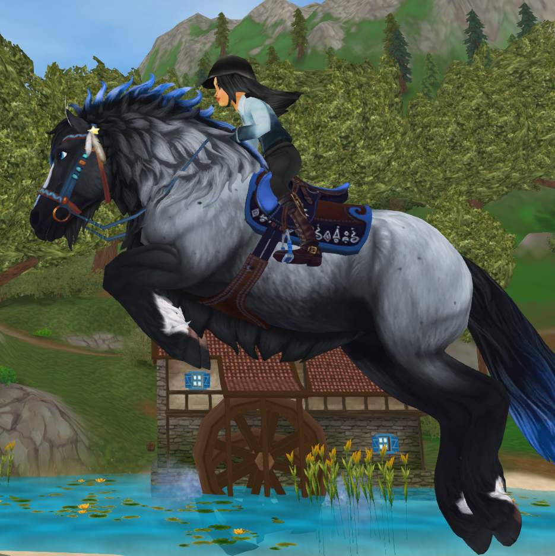
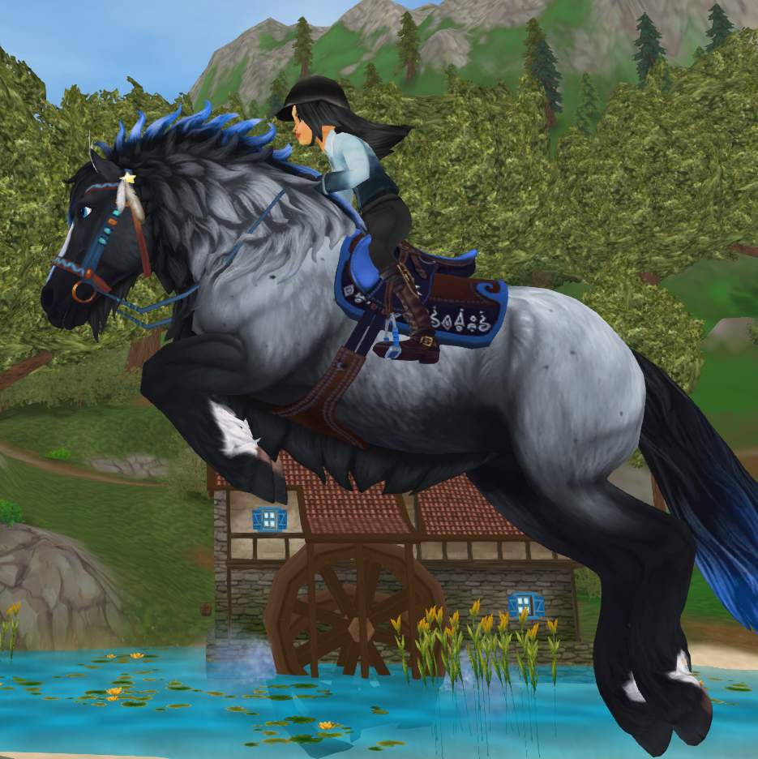

Vorstellungsrunde
Victoria Longhoof
Ich bin Victoria Longhoof
2021 habe ich die Dark Dancers League auf Server 12
gegründet.
Meine Position ist Clubbesitzerin/Clubleiterin
Gegründet habe ich ihn um eine nette Gemeinschaft zu schaffen
mit der man Spaß haben kann und auch manchmal Durchgeknallte Sachen
machen kann.
In meiner Freizeit gehe ich reiten,lese gerne und spiele Gitarre
Ich bin für jeden Spaß zu haben und nehme mir immer Zeit
um für meine mittis da zu sein.
Leonie Moonclaw
Ich bin Leonie Moonclaw
ich bin seid einigen Wochen Stellvertretende Clubleitung
und habe seid ich in dem Club bin so viele schöne Erfahrungen gemacht.
Erst seid einiger Zeit hat Victoria angefangen den Freizeitclub zu
einem Dressurclub zu machen und es ist wundervoll zu sehen wie sich
alles entwickelt und wie weit sie diesen Club noch bringen wird
In meiner Freizeit programmiere ich viel so auch diese Webseite
und habe eine Reitbeteiligung und einen Hund um die ich mich kümmer.
Durch den Club sind viele neue und gute Freundschaften entstanden.
und ich hoffe auf eine weiterhin abwechslungsreiche Zukunft mit euch.
 
